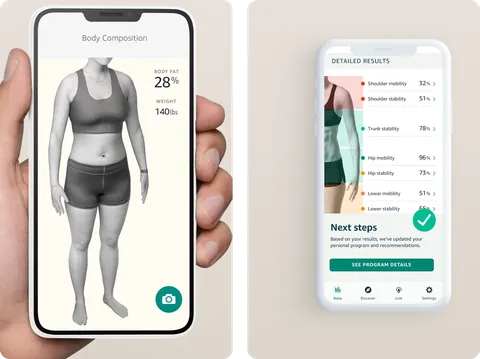

Amazon Health AI
I was the first product lead of Amazon’s Health Computer Vision and AI organization, from research to product. I brought its leaders together on one direction, set the rule that more money waited for two proofs, and chose the clinical reference each product was held to.
- Organization
- 100+ scientists and engineersI was its product lead and managed 10 product managers.
- Portfolio
- $100M+ a year
- Validated
- Body 2022, Movement 2022, waist-to-hip 2023Three studies in npj Digital Medicine, a Nature Portfolio journal.

Decisions
- Brought the organization’s leaders together for three days on one direction
- Required two proofs before more money: the customer problem, and the capability
- Ran Friday builds: about a 1% chance of working, a tenfold gain if they did
- Chose each measure’s clinical reference from the claim we needed to publish
One organization, from research to products
In 2021 I became the first product lead of Amazon’s Health Computer Vision and AI organization, part of Amazon Halo.
It had more than 100 scientists and engineers, with science teams in Seattle, Cambridge in the United Kingdom, and Tel Aviv. I directed its investment portfolio of more than $100 million a year, from research and development to commercial products. I managed 10 technical product managers, from entry level to principal. I brought its leaders together for three days to agree on one direction: using the camera in everyone’s phone to help people live healthier lives.
Health measures from a phone camera
The organization’s products turned phone photos and video into health measures; I was the product lead for two of them, Halo Body and Halo Movement.
Halo Body estimated body fat from phone photos. From August 2021, its scan worked from the knees up, for Halo members in smaller rooms. Halo Movement scored five exercises, filmed by a phone on the floor, from 0 to 100.
A new model, MeasureNet, estimated waist-to-hip ratio, a body-shape measure linked to disease risk, from three photos taken to voice prompts.
How MeasureNet was built
Each photo was first split into 23 body regions, and the model predicted each body circumference directly. In the 2023 study, that beat building a 3D body first, and three photos beat one or two. It learned from computer-generated bodies, and the study reports a remaining gap between those and real bodies.
Friday builds, then two proofs before more money
Each new capability needed two proofs before more money: a customer problem stated without the technology, and experiments showing the capability worked.
If either was missing, we paused further investment. Some ideas started as Friday builds. Each Friday, a product manager, a designer and a group of engineers took on one charter: “build something that won’t work.” We chose builds with about a 1% chance of working and a tenfold gain on a business metric if they did.
A clinical reference for each measure
For each product, I chose the clinical reference by starting from the claim we needed to publish.
Halo Body was tested against clinical dual-energy X-ray absorptiometry (DXA) scans at two clinical sites. Halo Movement was tested against a motion-capture suit and 13 clinical tests.
MeasureNet was tested against tape measures taken by trained staff, and against laser body scans. All three validation studies appeared in npj Digital Medicine, a Nature Portfolio journal: Halo Body and Halo Movement in 2022, and waist-to-hip ratio in 2023.
Three products, three clinical references
Each product was checked against its own clinical reference.
The data as a table
| Product | The phone saw | Checked against | The result | Published |
|---|---|---|---|---|
| Body | Front and back photos | DXA, a clinical X-ray scan, 134 adults | About 2.2 points, average error in body fat; the limit was 3 | npj Digital Medicine, June 2022 |
| Movement | Video of five exercises | A motion-capture suit and 13 clinical tests, 150 adults | Moderate to strong agreement with the suit and the 13 tests | npj Digital Medicine, September 2022 |
| Waist-to-hip | Front, side and back photos | Tape measures by trained staff, 1,200 people | About half the error of people measuring themselves | npj Digital Medicine, September 2023 |
On stage at Amazon’s devices event
On 28 September 2022, I took the stage at Amazon’s devices event in Seattle.
Amazon’s live blog recorded the handoff: “Dave Limp passes it off to Njenga Kariuki, who takes the stage.” I introduced Halo Rise, a bedside sleep tracker built by Amazon’s Halo Rise team.
What lasted
The waist-to-hip study appeared in September 2023, after Amazon ended Halo.
In that study, measured against trained staff with a tape, the app’s error was about half that of people measuring themselves.
In June 2024, I published the method we ran, in an essay for product managers building consumer AI products.